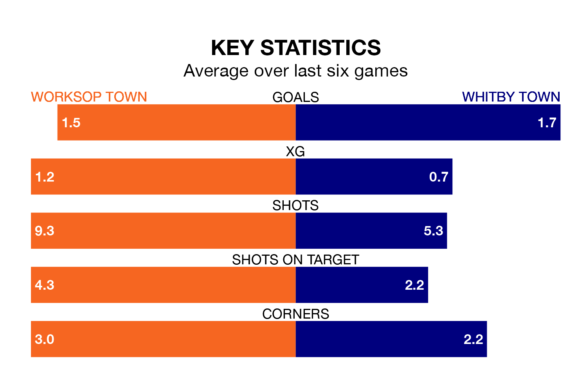

Worksop Town host Whitby Town in Saturday's match at the Windsor Food Service Stadium looking to bounce back from defeat last time out in Northern Premier League.
Worksop, who sit third in the league after 23 games, fell to a 2-0 away defeat to Gainsborough Trinity on Monday.
They face a Whitby side who picked up a win in their last match, a 3-0 victory against Ilkeston Town, and who sit fifth in the table.
With 51 goals in 23 games so far this season, Worksop are the league's joint-second-highest scorers with 2.2 goals per game. And they are conceding fewer than average, letting in 26 goals at a rate of 1.1 per game.
Whitby are also above average scorers, with 1.8 goals per game, compared to a league average of 1.7. They have conceded 1.3 goals per game.
Worksop Town are in mixed form in Northern Premier League, with two wins and three draws from their last six games.
With four wins and two draws over that period, Whitby Town's form is better – they have taken 14 points from 18, compared to the hosts' nine.
Updated: 12:57, 02/01/24